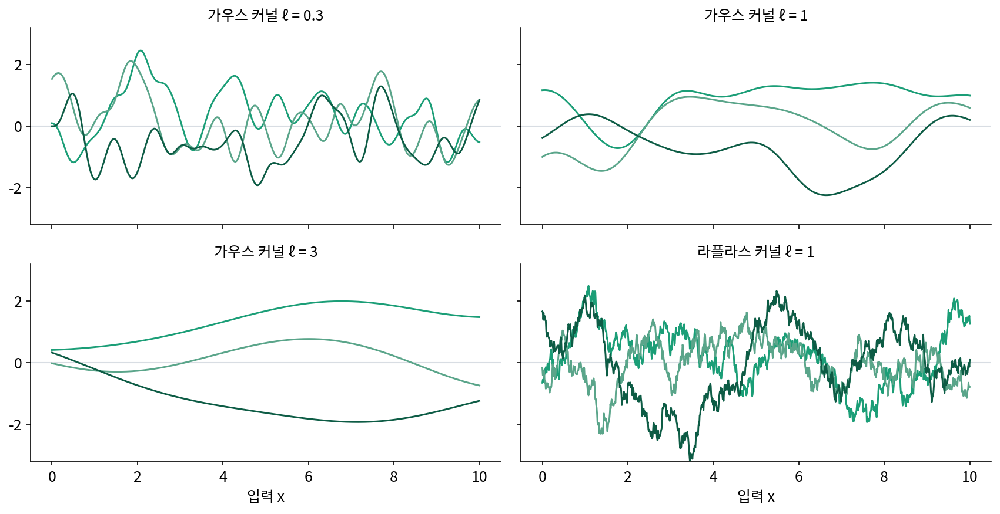
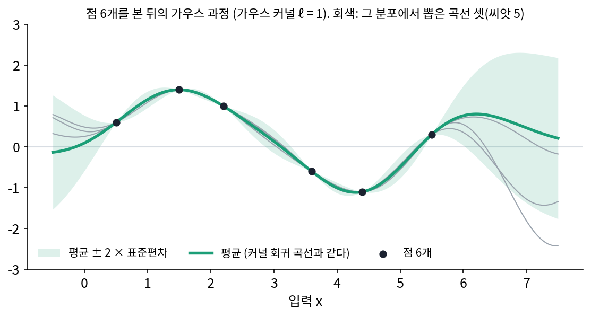
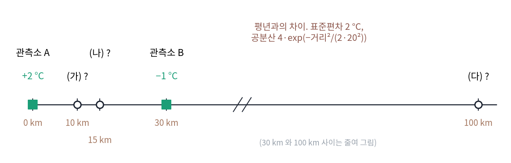
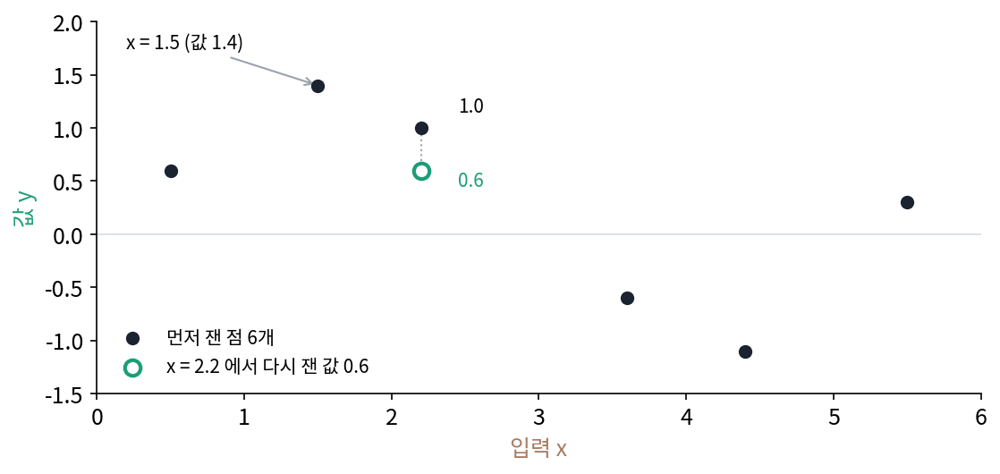
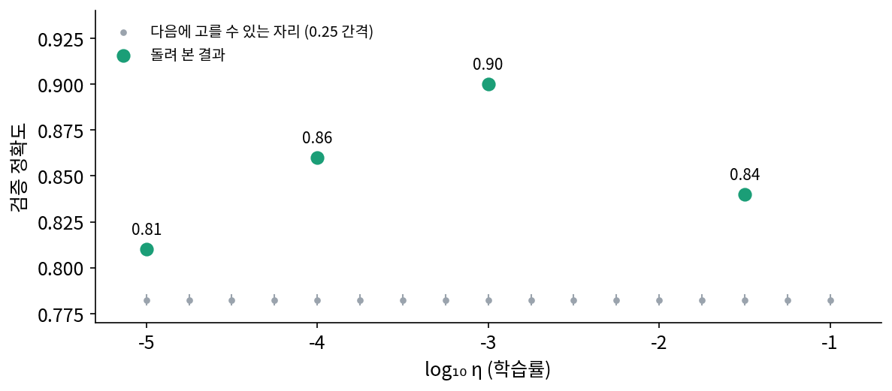

가우스 과정: 커널 함수를 공분산으로 쓴 함수의 분포
점 여섯 개를 가우시안 커널로 맞춘 곡선은 점을 정확히 지나고, 점 사이 x = 2.9에서 0.251, 점이 끝난 x = 7에서 0.466을 내놓았다. 그런데 두 숫자를 같은 정도로 믿어도 될까? 2.9는 2.2와 3.6 사이라 양옆에 점이 있고, 7은 마지막 점 5.5에서 1.5나 떨어져 있다. 곡선 하나만으로는 「여기는 잘 모른다」를 말할 수 없다. 또 폭 ℓ을 바꾸면 곡선의 출렁임이 바뀌었는데, 출렁임을 미리 가정하는 방법이 있다면 그것을 숫자로 적을 수 있을까?
역사: 금광의 시추 샘플 사이를 추정하기
남아프리카 비트바테르스란트의 금광에서 일하던 광산 기사 다니 크리게(Danie Krige)는 채굴할 구역 둘레에서 뽑은 샘플의 금 함량으로 그 구역의 품위를 추정해야 했다. 그런데 샘플로 「품위가 높다」고 매긴 구역은 실제로 캐 보면 평균적으로 그보다 낮았고, 「낮다」고 매긴 구역은 그보다 높았다. 크리게는 추정값이 실제 품위보다 한쪽으로 치우쳐 나오는 현상이 우연이 아니라 통계로 설명된다는 것을 보였다. 샘플들은 서로 따로 노는 값이 아니라 가까울수록 닮은 값이었다. 그는 회귀 이론으로 추정값을 고치는 방법을 내놓았고, 1951년 남아프리카 화학·야금·광업 학회지에 「비트바테르스란트의 기본적인 광산 평가 문제에 대한 통계적 접근」을 실었다.
프랑스의 광산 기사 조르주 마테롱(Georges Matheron)은 1960년대에 이 경험적 방법을 「거리에 따라 닮은 정도가 정해지는 무작위 함수」의 이론으로 다시 세웠고, 1963년 학술지 『경제 지질학』에 「지구통계학의 원리」를 실었다. 크리게의 방법을 이어받은 추정 방법에는 크리게의 이름이 붙어 「크리깅」이라 불린다. 마테롱은 1960년 글에서 이 이름(프랑스어 krigeage)을 썼는데, 이름을 처음 지은 사람은 자료마다 다르게 전해진다. 같은 계산은 위너와 콜모고로프의 예측 이론에서도 따로 나왔고, 지금 ML에서는 가우스 과정 회귀라 부른다. 거리로 정해지는 닮은 정도가 바로 평행이동 불변 커널 함수다.

구역 둘레 샘플로 품위를 추정하는 거면, 그냥 샘플 평균을 내면 되잖아요.

크리게가 본 건 바로 그렇게 매긴 값이 한쪽으로 치우친다는 거였어요. 「높다」고 매긴 구역을 캐 보면 어땠죠?

그보다 낮았죠. 음, 높게 나온 샘플 가운데 우연히 높게 나온 것도 섞여 있어서 그런가요?

그렇게 볼 수 있어요. 그걸 고치려면 샘플끼리 거리에 따라 얼마나 닮았는지를 적은 무엇이 있어야 하는데, 1951년에 크리게 손에 있던 건 광산에서 쌓은 경험과 회귀 이론이었어요. 거리에 따라 닮은 정도가 정해지는 무작위 함수의 이론은 10여 년 뒤 마테롱이 세웠고요.

방법이 먼저 나오고 이론이 뒤따라온 거네요. 가까운 시추 샘플일수록 더 믿는다는 감은 있었는데, 그걸 식으로 적을 말이 없었던 거고요.

거리로 정해지는 닮은 정도가 커널 함수라면, 커널 함수로 추정한 값이 얼마나 틀릴 수 있는지도 함께 나올까요?
곡선 하나 대신 곡선의 분포
곡선을 하나로 정하지 말고 무작위로 뽑히는 것으로 보자. 아무 입력 몇 개를 골라도 그 입력들에서의 곡선 값이 함께 정규분포를 이루고, 두 입력에서의 값의 공분산이 커널 함수 값이 되도록 뽑는다. 가까운 두 자리는 공분산이 1에 가까워 함께 오르내리고, 먼 두 자리는 거의 따로 움직인다. 폭이 다른 가우시안 커널과 라플라스 커널로 곡선을 셋씩 뽑으면 아래와 같다.

커널 함수를 공분산으로 삼아 함수를 뽑는 이 분포를 가우스 과정 (커널 함수를 공분산으로 쓴 함수의 분포 / Gaussian process)이라 한다. 점 여섯 개를 본 뒤에는 여섯 점을 지나는 곡선들만 남긴 분포를 보면 되는데, 그 분포의 평균과 표준편차는 아래와 같다.
평균 곡선 μ는 커널 함수로 맞춘 곡선과 식이 똑같아서, 실제로 x = 2.9에서 0.251, 7에서 0.466으로 같다. 새로 생긴 것은 표준편차 σ인데, 데이터 점에서는 0이고 x = 2.9에서 0.146, 5.0에서 0.138이다. 마지막 점을 지나 x = 7에서는 0.919로 커지고, x = 10에서는 1.000, 점을 보기 전과 같아진다. 0.466이라는 평균을 믿기 어렵다는 것이 숫자로 나온다.

곡선이 0 을 몇 번 지나나: 스펙트럼이 정하는 매끄러움
뽑은 곡선이 얼마나 출렁이는지는 길이 20 구간에서 곡선이 0을 지나는 횟수로 잴 수 있는데, 샘플 300개로 그 횟수를 평균 냈다.
| 커널 | 길이 1 당 0 을 지나는 횟수 (실험) | 1/(πℓ) |
|---|---|---|
| 가우스, ℓ = 0.3 | 1.056 | 1.061 |
| 가우스, ℓ = 1 | 0.316 | 0.318 |
| 가우스, ℓ = 3 | 0.108 | 0.106 |
가우시안 커널의 곡선은 폭에 반비례해 0을 지난다. 오른쪽 칸의 식은 벨 연구소의 라이스(Stephen O. Rice)가 1944년 「무작위 노이즈의 수학적 분석」에서 얻은 공식에서 나온다. 무작위 곡선이 길이 1 당 0을 지나는 횟수는 주파수 분포가 빠른 물결을 얼마나 담았는지, 주파수 제곱의 평균으로 정해진다.
라플라스 커널의 주파수 분포 ℓ/(π(1 + ℓ²ω²))는 꼬리가 1/ω²로 줄어서, ω²을 곱하면 적분이 끝없이 커진다. 공식대로라면 곡선이 0을 무한히 자주 지나고, 실제로 세어 보면 격자를 촘촘하게 할수록 횟수가 는다. 라플라스 커널(폭 1)의 곡선을 격자 간격 0.08, 0.02, 0.005, 0.00125로 뽑으면 길이 1 당 0을 지나는 횟수가 1.55, 3.15, 6.40, 12.72다. 간격을 4분의 1로 줄일 때마다 횟수가 두 배가 된다. 가우시안 커널(폭 1)은 같은 격자에서 0.317, 0.324, 0.317로 거의 변하지 않는다. 라플라스 커널의 곡선은 이어져 있지만 어디서도 기울기가 정해지지 않는 곡선이다.
주파수 분포가 빨리 줄수록 곡선이 매끄럽다는 것은, 닫힌 곡선을 그리는 화살표의 길이가 주파수가 높아질수록 빨리 줄면 곡선이 매끄러웠던 것과 같은 원리다. 그때는 곡선 하나의 계수가 주파수를 따라 줄었고, 이번에는 곡선들을 뽑는 분포의 주파수 분포 p(ω)가 줄어든다. 커널 함수를 고르는 일은 곧 「맞출 곡선이 얼마나 매끄러울 것이라고 믿는가」를 고르는 일이다. 위젯에서 커널 함수의 종류와 폭을 바꿔 곡선이 0을 지나는 횟수를 세어 보자.
ML에서: 하이퍼파라미터 고르기와 넓은 신경망
학습률이나 층 수를 고를 때 한 번 돌려 보는 데 몇 시간씩 걸리면, 지금까지 돌려 본 몇 번의 결과로 다음에 돌려 볼 자리를 정해야 한다. 스누크(Jasper Snoek), 라로셸(Hugo Larochelle), 애덤스(Ryan Adams)는 NIPS 2012에 「기계 학습 알고리즘의 실용적인 베이즈 최적화(Practical Bayesian Optimization of Machine Learning Algorithms)」를 냈다. 그들은 하이퍼파라미터와 검증 성능 사이의 함수를 가우스 과정으로 두고, 평균과 표준편차를 함께 보며 다음 자리를 골랐지만 가우시안 커널은 쓰지 않았다. 논문은 가우시안 커널로 뽑은 곡선이 「실제 최적화 문제에 비해 비현실적으로 매끄럽다」고 적고, 뽑은 곡선이 두 번까지만 미분되는 마테른 커널을 골랐다. 마테른 커널은 주파수 분포의 꼬리가 가우시안 커널과 라플라스 커널 사이인 커널 함수이고, 이 커널로 베이즈 최적화가 어떤 자리를 고르는지는 아래 문제 12에서 직접 계산한다.
가우스 과정은 신경망과도 닿는다. 닐(Radford Neal)은 1994년 박사 논문과 기술 보고서 「무한한 망의 사전 분포」에서, 은닉층이 하나인 신경망의 가중치를 정규분포로 무작위로 두고 은닉 단위를 무한히 늘리면 망이 나타내는 함수가 가우스 과정이 된다는 것을 보였다. 학습하는 동안의 넓은 신경망도 커널 함수 하나로 적힌다.
문제 10. 관측소 둘 사이의 기온
두 기상 관측소가 30 km 떨어져 있다. 오늘 기온은 평년보다 관측소 A(0 km)에서 2 °C 높고 B(30 km)에서 1 °C 낮다. 평년과의 차이를 가우스 과정으로 본다. 표준편차 2 °C, 공분산 4 × exp(−(거리)²/(2 × 20²)). (가) A 에서 10 km 떨어진 마을의 평균과 표준편차는? (나) 15 km 가운데 마을은? (다) 100 km 떨어진 마을은?

(가)는 거리로 나눠 붙이면 되잖아요. 10 km면 A에 3분의 2, B에 3분의 1이니까 2 × 2/3 − 1/3 = 1 °C요.
공분산 식으로 무게를 구해 봐요. 두 관측소끼리의 공분산도 들어가야 해요.

계산하면 A 무게 0.766, B 무게 0.358이라 2 × 0.766 − 0.358 = +1.175 °C, 표준편차 0.653 °C예요. 거리 비례랑 다르네요.

무게를 더하면 0.766 + 0.358 = 1.124야. 1이 넘어. 평균을 내는 거면 무게 합이 1이어야 하지 않나?

평년과의 차이는 평균이 0인 분포에서 뽑혔다고 두었어요. (다) 100 km 마을을 계산해 보면 무게 합이 어떻게 되죠?
계산해 볼게요. 무게가 −0.001, 0.002로 거의 0이고, 평균 −0.004 °C, 표준편차 2 °C예요.

그럼 관측을 아예 안 믿는 거네. 평년 그대로야.

아, 그러면 무게 합이 1일 필요가 없는 건 남은 무게가 「평년」(차이 0)에 가 있어서예요.
그럼 10 km 마을에서 합이 1을 넘은 건요?
두 관측소가 서로 닮아서(상관 0.325) 서로의 말을 보태 주니까, 가까운 곳에서는 합이 1을 넘기도 하는 것 같아요.
(나) 15 km는 내가 돌려 볼게. 두 무게가 0.570씩으로 같고 평균 +0.570 °C, 표준편차 0.748 °C야.

일기 예보 앱이 우리 동네 기온을 관측소가 없는데도 내놓는 게 이렇게 하는 거였구나. 관측소에서 멀수록 예보 숫자는 덜 믿어야겠네요.
문제 11. 같은 입력에 값이 둘
점 여섯 개에 x = 2.2 의 점을 하나 더 쟀더니 0.6 이 나왔다(먼저 잰 값은 1.0). 노이즈가 없다고 보는 가우스 과정(가우시안 커널, 폭 1)으로 일곱 점을 맞추려 한다. (가) 7 × 7 커널 행렬로 연립방정식을 풀 수 있는가? (나) 측정 노이즈가 있다고 보고 커널 행렬의 대각에 노이즈 분산 0.01 또는 0.1 을 더하면 x = 2.2 의 평균과 표준편차는? (다) 노이즈를 넣으면 x = 1.5(값 1.4) 의 평균은 어떻게 되는가?

점이 하나 늘었을 뿐이니까 7 × 7로 풀면 되죠. 그런데 numpy 가 행렬이 특이하다고 오류를 내요. 행렬식이 0이에요.
셋째 줄과 넷째 줄을 비교해 보세요.
둘 다 x = 2.2라서 두 줄이 완전히 같아요. 같은 자리에서 곡선이 1.0도 지나고 0.6도 지나야 하니 답이 없네요.
노이즈가 없다는 가정을 빼면 돼. (나)는 노이즈 분산 0.01이면 평균 0.810, 표준편차 0.070이고, 0.1이면 0.829, 0.207이야. 두 값의 가운데 0.8 근처로 가.
(다)는요? 노이즈를 넣으면 곡선이 데이터 점을 꼭 지나야 할까요?
꼭 지날 필요는 없을 것 같아요. 숫자를 보면… x = 1.5의 평균이 노이즈 0.01이면 1.366, 0.1이면 1.215로 1.4에서 내려와요.

그건 2.2에 점이 둘이라 끌려 내려간 거 아니야?
그럼 원래 여섯 점만 써 보자. 0.1이면 1.261이야. 그래도 내려와.
그럼 대각에 더한 노이즈 분산은 무엇을 정하는 걸까요?
점 하나하나를 「얼마나 믿을까」요. 노이즈를 크게 볼수록 점 하나하나를 덜 믿고 곡선을 평평하게 펴요.

실험 수업에서 같은 조건으로 두 번 잰 값이 달라서 표에 둘 다 적었더니, 조교님이 평균과 오차 막대로 그리라고 했던 게 이거네요.
문제 12. 학습률을 어디서 다시 돌려 볼까
학습률 η 를 log₁₀ η = −5, −4, −3, −1.5 로 돌려 검증 정확도 0.81, 0.86, 0.90, 0.84 를 얻었다. 가로를 log₁₀ η 로 잡고, 정확도에서 0.9 를 뺀 값을 가우스 과정(가우시안 커널 폭 0.7, 표준편차 0.05)으로 본다. 다음 자리는 −5 에서 −1 까지 0.25 간격 가운데 「평균 + 2 × 표준편차」가 가장 큰 곳으로 고른다. (가) 평균만 보면 어디가 가장 좋은가? (나) 「평균 + 2 × 표준편차」로는 어디인가? (다) 가우시안 커널의 폭을 0.2 나 2 로 바꾸면 고르는 자리가 어떻게 되는가?

(가)는 평균이 가장 큰 곳이 −3.0, 0.900이에요. 이미 돌려 본 자리네요. 그럼 다음에도 −3.0을 다시 돌리면 되겠죠.
이미 돌려 본 자리를 다시 돌리면 무엇을 새로 알게 되죠?
노이즈가 없다면 똑같은 0.90이 나오니까 아무것도 못 배워요. 그래서 표준편차를 더해 보는 거군요.
그럼 (나)는 어디를 고를까요? 계산하기 전에 짐작해 봐요.
돌려 본 자리 사이가 가장 넓게 빈 곳…? 계산하면 −2.5에서 평균 0.886, 표준편차 0.027, 합이 0.939로 가장 커요. −3과 −1.5 사이가 비어 있으니까요.
(다)는 폭 0.2면 −2.25를 고르는데 거기서 「평균 + 2 × 표준편차」가 0.9999야.
거의 1.0이네? 왜 그렇게 커?
점 사이가 금방 「모름」이 돼서, 안 돌려 본 곳은 다 평균 0.9에 표준편차 0.05를 더한 1.0 근처로 보여. 폭 2면 −2.75를 고르고 값은 0.902야. −2.0의 표준편차도 0.002밖에 안 돼서 거의 아무 데도 궁금하지 않고.

폭이 곡선이 얼마나 매끄러울 거라 믿는지를 정하죠. 너무 좁게 잡으면 모든 빈자리가 기대되고, 너무 넓게 잡으면 이미 다 안다고 착각해요.

그래서 스누크와 동료들이 커널 함수를 고르는 데 공을 들인 거예요. 매끄러움에 대한 믿음이 커널 함수의 주파수 분포에 들어 있고, 그 믿음이 다음 실험을 고르니까요.
시험공부를 할 때 이미 잘 아는 단원만 또 보는 대신, 점수가 애매하고 아직 안 풀어 본 단원을 먼저 보는 거랑 같네요. 단원이 학습률 자리이고, 점수가 애매한 단원이 표준편차가 큰 자리예요.